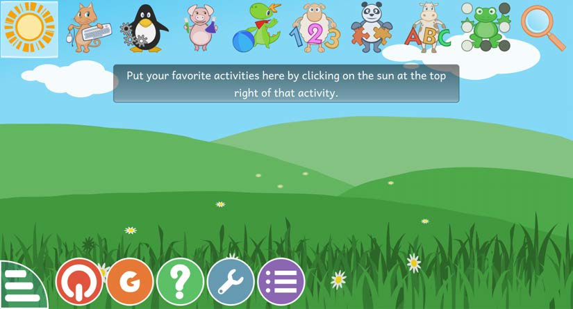

Unit Seven - Digital Resources - Lesson 1
Unit Seven
Digital Resources
Lesson 1
Drawing letters and words using digital resources
Use this digital resource through the following steps.
You will see the following screen.

Lesson 1
Use this digital resource through the following steps.
You will see the following screen.
